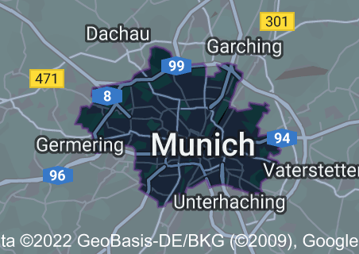

Μόναχο
Η πόλη του Μόναχο είναι η νότια κεντρική πτέρυγα στο Πριγκιπάτο του Μόναχο. Βρίσκεται σε ένα ακρωτήριο που εκτείνεται στη Μεσόγειο Θάλασσα, έχει το παρατσούκλι The Rock (γαλλικά: Le Rocher). Το όνομα «Πόλη του Μόναχο» είναι παραπλανητικό: δεν είναι η ίδια πόλη, αλλά ιστορική συνοικία. Κατέχει τους περισσότερους πολιτικούς και δικαστικούς θεσμούς της χώρας: το παλάτι του Πρίγκιπα, το δημαρχείο, την κυβέρνηση, το Εθνικό Συμβούλιο (κοινοβούλιο του Μόναχο), το Δημοτικό Συμβούλιο, τα δικαστήρια και μια φυλακή.
|  |

|
Τρίτη — 27 |
Τετάρτη — 28 |
Τρίτη — 27
Marienplatz

Η Marienplatz είναι μια κεντρική πλατεία του Μονάχου που πήρε το όνομά της από την Mariensäule, μια στήλη της Μαρίας που βρίσκεται εκεί. Η πλατεία αυτή είναι γνωστή για τον σημαντικό ρόλο της στην ιστορία της πόλης και την όμορφη αρχιτεκτονική της, συμπεριλαμβανομένου του Νέου Δημαρχείου, το οποίο διαθέτει ένα δημοφιλές καμπανάκι που παίζει στις 11 το πρωί, το μεσημέρι και τις 5 το απόγευμα κάθε μέρα. Η Marienplatz μπορεί να ενδιαφέρει έναν επισκέπτη που θέλει να μάθει περισσότερα για την ιστορία του Μονάχου και να δει μερικά από τα πιο διάσημα κτίρια του.
Schloss Nymphenburg

Το παλάτι Nymphenburg είναι ένα μεγάλο μπαρόκ παλάτι που βρίσκεται στα περίχωρα του Μονάχου. Αρχικά χτίστηκε ως θερινή κατοικία για τους ηγεμόνες της Βαυαρίας και σήμερα λειτουργεί ως μουσείο όπου οι επισκέπτες μπορούν να μάθουν για την ιστορία του παλατιού και των ενοίκων του. Οι εκτεταμένοι κήποι του παλατιού είναι επίσης δημοφιλές αξιοθέατο και περιλαμβάνουν πολλά διακοσμητικά σιντριβάνια και αγάλματα. Το παλάτι Nymphenburg μπορεί να ενδιαφέρει έναν επισκέπτη που ενδιαφέρεται για την ευρωπαϊκή ιστορία και αρχιτεκτονική ή που θέλει να εξερευνήσει τους όμορφους κήπους του.
Englischer Garten

Ο Αγγλικός Κήπος είναι ένα μεγάλο δημόσιο πάρκο στο Μόναχο που είναι γνωστό για την εκτεταμένη έκταση πρασίνου και τις εγκαταστάσεις αναψυχής του. Το πάρκο είναι ένα δημοφιλές σημείο τόσο για τους ντόπιους όσο και για τους επισκέπτες, οι οποίοι έρχονται για να απολαύσουν δραστηριότητες όπως τζόκινγκ, ποδηλασία και ηλιοθεραπεία. Ο Αγγλικός Κήπος διαθέτει επίσης μια σειρά από σημαντικά ορόσημα, όπως ο Κινέζικος Πύργος και ο Μονόπτερος, ένας μικρός ναός ελληνικού τύπου. Ο Αγγλικός Κήπος μπορεί να ενδιαφέρει έναν επισκέπτη που θέλει να περάσει λίγο χρόνο στην ύπαιθρο και να απολαύσει τη φυσική ομορφιά του Μονάχου.
Münchner Residenz

Η Residenz του Μονάχου είναι ένα μεγάλο συγκρότημα παλατιών που βρίσκεται στο κέντρο του Μονάχου. Αρχικά χτίστηκε ως κατοικία των ηγεμόνων της Βαυαρίας και σήμερα λειτουργεί ως μουσείο όπου οι επισκέπτες μπορούν να μάθουν για την ιστορία του παλατιού και των κατοίκων του. Το Residenz είναι γνωστό για την όμορφη αρχιτεκτονική του και την εντυπωσιακή συλλογή έργων τέχνης, η οποία περιλαμβάνει έργα δασκάλων όπως ο Ρούμπενς και ο Ρέμπραντ. Το Residenz του Μονάχου μπορεί να ενδιαφέρει έναν επισκέπτη που ενδιαφέρεται για την ιστορία και την τέχνη και που θέλει να δει μερικά από τα πιο διάσημα ορόσημα της πόλης.
Τετάρτη — 28
Alte Pinakothek

Η Alte Pinakothek είναι ένα μουσείο τέχνης στο Μόναχο της Γερμανίας. Είναι ένα από τα παλαιότερα και πιο διάσημα μουσεία τέχνης στον κόσμο, με μια συλλογή από πάνω από 800 πίνακες που καλύπτουν την περίοδο από τον 14ο έως τον 18ο αιώνα. Μπορεί να ενδιαφέρει έναν επισκέπτη επειδή προσφέρει μια απαράμιλλη ευκαιρία να δει μερικά από τα μεγαλύτερα αριστουργήματα της ευρωπαϊκής τέχνης, συμπεριλαμβανομένων έργων καλλιτεχνών όπως ο Μποτιτσέλι, ο Ραφαήλ και ο Ρέμπραντ. Το εκπληκτικό νεοκλασικό κτίριο του μουσείου αποτελεί επίσης από μόνο του σημαντικό αξιοθέατο, καθιστώντας το ένα απαραίτητο αξιοθέατο για όποιον ενδιαφέρεται για την τέχνη και την αρχιτεκτονική.
BMW Museum

Ενώ το Μουσείο BMW στο Μόναχο είναι σίγουρα ένας προορισμός που πρέπει να επισκεφτούν οι λάτρεις των αυτοκινήτων, έχει επίσης πολλά να προσφέρει και στους μη λάτρεις των αυτοκινήτων. Το μουσείο προσφέρει μια μοναδική ματιά στην ιστορία και την ανάπτυξη μιας από τις πιο εμβληματικές μάρκες αυτοκινήτων στον κόσμο. Οι επισκέπτες μπορούν να εξερευνήσουν τα εκθέματα του μουσείου, τα οποία παρουσιάζουν ένα ευρύ φάσμα οχημάτων BMW από διαφορετικές εποχές, καθώς και να μάθουν για την ιστορία της εταιρείας και τη συμβολή της στην αυτοκινητοβιομηχανία. Το μουσείο διαθέτει επίσης διαδραστικές οθόνες και παρουσιάσεις πολυμέσων που παρέχουν έναν διασκεδαστικό και ελκυστικό τρόπο να μάθουν για τις καινοτομίες και τις τεχνολογίες της BMW. Εκτός από τα συναρπαστικά εκθέματα, το ίδιο το Μουσείο BMW είναι ένα έργο τέχνης. Το κτίριο του μουσείου σχεδιάστηκε από τον διάσημο αρχιτέκτονα Karl Schwanzer και διαθέτει ένα μοναδικό, φουτουριστικό σχεδιασμό που σίγουρα θα εντυπωσιάσει ακόμη και τους μη λάτρεις των αυτοκινήτων. Συνολικά, το Μουσείο BMW στο Μόναχο προσφέρει μια μοναδική και συναρπαστική εμπειρία για τους επισκέπτες όλων των ενδιαφερόντων, καθιστώντας το έναν προορισμό που πρέπει να επισκεφθείτε για όποιον επισκέπτεται την πόλη.
Frauenkirche

Η Frauenkirche είναι ένας γοτθικός καθεδρικός ναός που βρίσκεται στο κέντρο του Μονάχου. Είναι γνωστός για τους χαρακτηριστικούς δίδυμους πύργους του, οι οποίοι αποτελούν σημαντικό μέρος του ορίζοντα της πόλης. Η Frauenkirche είναι επίσης ένας σημαντικός θρησκευτικός χώρος και αποτελεί δημοφιλή προορισμό για τους επισκέπτες που θέλουν να μάθουν για την ιστορία και την αρχιτεκτονική του καθεδρικού ναού. Η Frauenkirche μπορεί να ενδιαφέρει έναν επισκέπτη που ενδιαφέρεται για τη θρησκευτική ιστορία και την αρχιτεκτονική ή που θέλει να δει ένα από τα πιο εμβληματικά ορόσημα του Μονάχου.
Deutsches Museum

Το Deutsches Museum είναι ένα μουσείο επιστήμης και τεχνολογίας στο Μόναχο της Γερμανίας. Είναι ένα από τα παλαιότερα και μεγαλύτερα μουσεία επιστημών στον κόσμο, με συλλογή άνω των 28.000 αντικειμένων που καλύπτουν ένα ευρύ φάσμα επιστημονικών και τεχνολογικών κλάδων. Μπορεί να ενδιαφέρει έναν επισκέπτη επειδή προσφέρει μια μοναδική ευκαιρία να μάθει για την ιστορία και την ανάπτυξη της επιστήμης και της τεχνολογίας και να δει ένα ευρύ φάσμα συναρπαστικών εκθεμάτων και επιδείξεων.